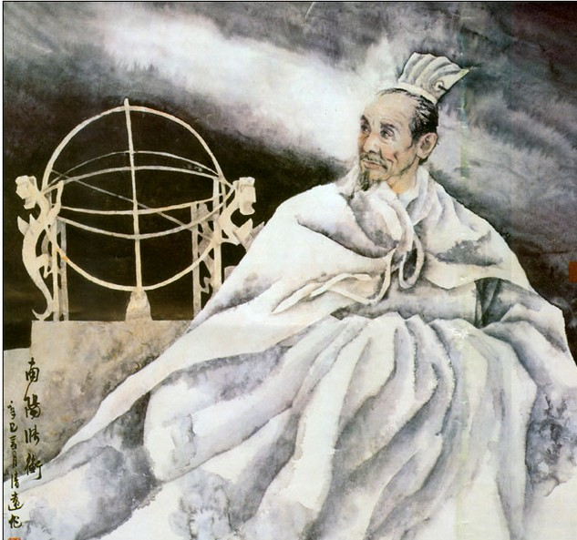

张衡

张衡（78～139），字平子，是我国东汉时期着名的科学家、文学家，他的出生地在现在的河南省南阳县的石桥镇。他的祖父张堪做过太守，为官清廉。父亲早逝，因此张衡家里很贫穷。张衡从小就勤奋好学，加上天资聪颖，很早就闻名乡里。据史书记载，他10岁时就“能五经贯六艺”，过目成诵。他兴趣很广泛，常常涉猎自然科学方面的读物，而且写得一手好辞赋。一天，张衡从一本诗集里读到四句诗，描述了北斗星在各个季节傍晚时的变化：“斗柄指东，天下皆春；斗柄指南，天下皆夏；斗柄指西，天下皆秋；斗柄指北，天下皆冬。”他觉得这太有意思了。天上的繁星闪烁，有的像箕，有的像斗，有的像狗，又有的像熊，它们的运行义各有怎样的规律呢？这简直是太美妙了。于是张衡根据诗的内容又参考别的书籍画成了天象图，每夜只要是没有云彩，他就默默地对着天象图仔细观察着夜空。广漠的星空有多少难解之谜呀，他观察着、记录着、思考着，他的脑袋里装满了各式各样的问题，充满了五颜六色的幻想。后来，他终于确认那四句诗里描述得不够准确，事实上斗柄早春指东北，暮春却指东南。